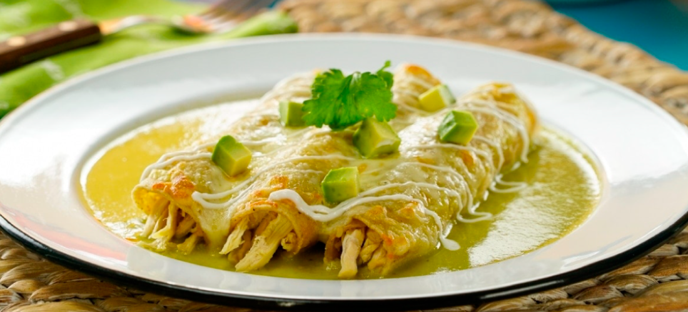

Enchiladas

Las enchiladas son muy parecidasa los chilaquiles. Son tacos de pollo cubiertos con salsa verde que se pueden acompañar con pollo, queso, crema y frijoles.
Ingredientes
- Salsa verde
- Totopos de maíz
- Pollo
- Freir un poco la tortilla de las enchiladas
- Agregar pollo dentro de la tortilla en forma de taco
- Vertir la salsa caliente sobre las enchiladas
- Acompañar con queso, crema y frijoles al gusto